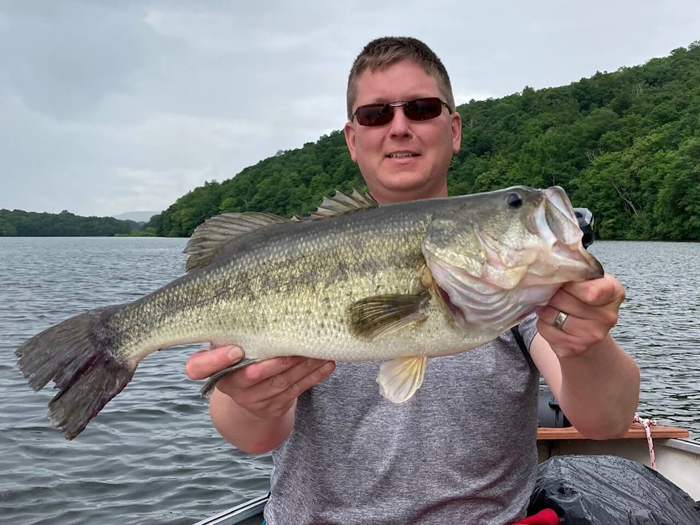
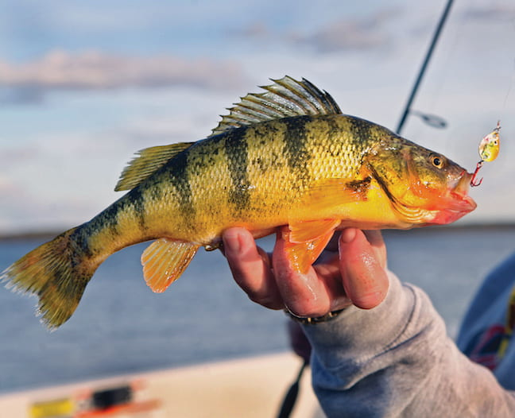

Now let's explore the most common species of Quebec:
Northen Pike

Pike are one of the most popular freshwater predator and in modst aquatic ecosystems they lie that the top of the food chain as the apex predator. They can grow up to a maximum lengt of 60 inches and a maximum weight of around 60lb! These fish have slim bodies that make them very aerodynamic, which allows them to be very fast and effective predators. In addition they have about 700 razor-sharpteeth, so handle with catution. Overall, Pikes are known as being aggressive fish, which is why many fishmen enjoy fishing this species.
Largemouth Bass
Largemouth Bass are considered to be one of the biggest freshwater gamefish. They can reach a maximum length of about 30 inches and a maximum weight of a little over 20 pounds. But there size varies depending on the conditions that they live in. These fish have much small teeth, which alows the catcher to hold the fish by it's mouth. These fish are very distinctive, since they have a black honizontal stripe along their slide and black-tip tails. Bass are very engergic fish and will often jump out of the water when hooked. Fighting them to the boat is often described as very exhilierating.
Yellow Perch
Yellow Perch are a samller type of fish. They can measure 4 to 10 inches in length and they have a lifespan of about 10 years. These fish have vertical black stripes along with smaller teeth smiliar to a bass, which allows them to be held by it's mouth. However you shouldn't hold then from the top of their bodies because they have spikey dorsal fins, that are sharp.
Lake trout

Lake Trout are in salmon family. They have a similar shaped mouth to salmons with somewhat sharp teeth. Having a unique jaw to most of the other freshwater fish, makes the handeling of the fish diffcult. Catchers must hold the fish under or through the gills in order to proprely have control over the fish. Lake trout spescies prefer the cold water, so they generally inhabit the water at about 80 ft deep. So catching these fish requires special equipment such as a downrigger with is a wieght that attches to your line, weighing down your lugre to the desired depth. These fish have white speckles that coat their entire bodies. To add they can reach lengths of about 20 to 30 inches in size.
Walleye/Pickerel

Walleye or Pickerel are both conisdered correct terms for this fish, but in Canada the majority refers to them as Pickerel. These fish considered to be the largest members of the perch family and like the Perch, the Walleye they have long spikey dorsal fins. Something interseting is that they are sensitive to light and normally dwell in where in shaded areas. Pickerel are a schooling fish, which means they stay in groups of their own kind. Overall these fish are mostly known for there big eyes, which help them see and feed at night or in murky water. However they cannot see details well, which many anglers often assume the opposite, given that they have bigger eyes than many freshwater fish.
Select the fish that you found most intersting:
| Fish |
|---|
| Pike |
| Largemouth Bass |
| Yellow Perch |
| Lake Trout |
| Walleye/Pickerel |